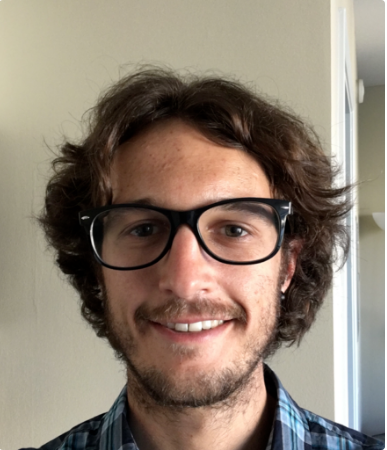

About Me

My name is Stephen Pellegrini. I currently work in the IT department at Los Angeles Trade Tech College.
After I finish the coding bootcamp at the UCLA Extension, I hope to get a job as a full stack web developer in Los Angeles.
I grew up in Orange County, California, in the city of Yorba Linda. In high school, I got my first exposure to computer programming in an AP Computer Science class. We learned Java, and I excelled. After high school, I attended UCLA where I studied English Literature and Philosophy.
I chose a traditional, liberal arts education because I believe the ability to think critically is one of the most essential skills in today's world. In addition, through much practice with written and verbal communication, I developed strong analytical reasoning skills. Even though I switched gears, these skills are still applicable, and will surely benefit me in my quest to become a web developer.
Currently I live in Koreatown, in the City of Los Angeles. My hobbies include hiking, traveling, and writing code!